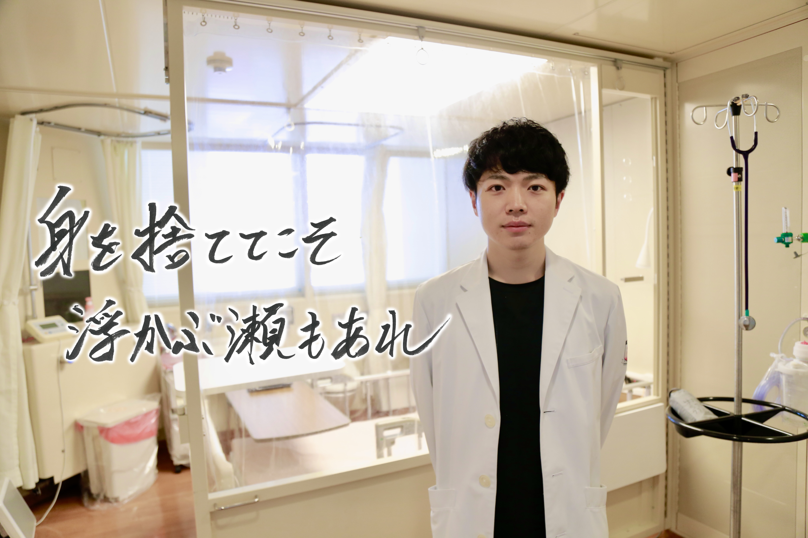
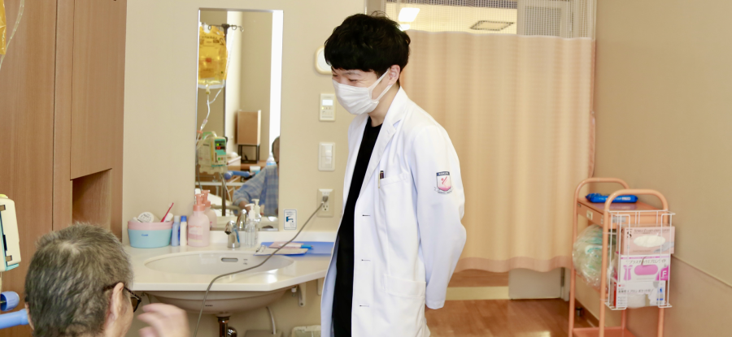
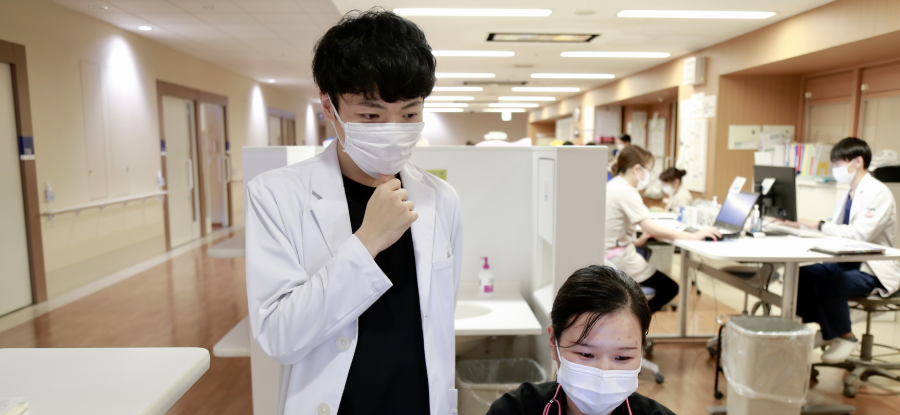

専攻医
Senior Resident もどる
もどる


■当院でやりがいを感じること
私は大阪で生まれ育ち大阪の病院で初期研修を終え、縁もゆかりもないこの北九州の地へやって来ました。それは、専攻医の殺到する大都会の人気病院では得られない主体的な研修を求めていたからです。確かに当院の内科専攻医の数は他院と比べると病床数ほど多くはありませんが、それは裏を返すと専門領域で主戦力として働くことができるということです。私が研修している血液内科は診断~入院~治療後のフォローまで患者さんと長い付き合いになることが多く、初診の時点で遠い先を見据えた方針を立てなければなりません。まさに知識や経験がものをいう世界なので自分の不勉強を自覚する日々ですが、上の先生方はそんな私を程よく放流してくれつつ困った時には必ず助けてくださります。恐らくこの環境が私にはとても合っているようで、苦にならない忙しさがそのまま充実感ややりがいとなって積み重なっていっているのを実感します。

■入職希望者へのメッセージ
私は専攻医の3年間のうち合計2年間を小倉記念病院の血液内科で過ごします。他の専攻医も各々の志望科を2年間ローテーションしている方がほとんどです。医療界は大きな転換期を迎えようとしていますが、それでもやはり内科専門医、サブスペ専門医、さらにサブスペ内の専門医や認定医…と専門を究めたいのであればそれなりの症例を経験できる施設に居続ける必要があります。当院は市中病院でありながら専門科に重きを置いた研修をすることができるので、広く浅くというより狭く深く学習したい先生方にとっては抜群の環境なのではないでしょうか。とは言え、何事も自分の目で見てみないことには始まりません。自分がこの病院で働いている姿を想像できるかどうか、まずは見学に訪れてみてください。